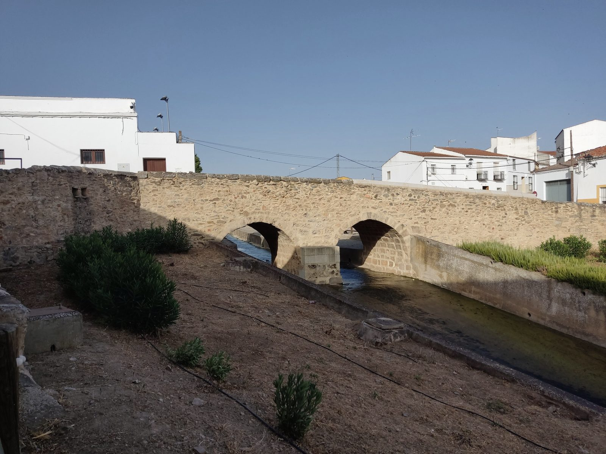

Ayuntamiento de
Usagre
Suena bien
Hoy en Usagre sábado 3 de octubre
Ayuntamiento
Cerrado ahora · abre el lunes a las 8:00
Lunes a viernes, de 8:00 a 15:00 Ejemplo
Lo próximo en la agenda
- Actuación de La CoplaSábado 10 de octubre
- Empiezan las escuelas deportivas infantilesMartes 13 de octubre, 17:00
- Empieza PowerKids, de 9 a 12 añosMiércoles 14 de octubre, 17:00
Último aviso
Corte de agua programado en varias calles, de 9:00 a 13:00 EjemploHoy
Sede electrónica
¿Qué necesita hacer?
Todos los trámites- Empadronarme Alta o renovación en el padrón Se abre la sede electrónica
- Volante de empadronamiento Certificado o volante Se abre la sede electrónica
- Licencia de obra Licencia o autorización urbanística Se abre la sede electrónica
- Avisar de una incidencia Una farola, un bache, un contenedor Se abre la sede electrónica
Vivir aquíPadrón, certificados, boda civil
Casa, obras y campoLicencias, agua, quemas
- Obra pequeña: declaración responsable, se abre la sede electrónica
- Obra mayor: licencia urbanística, se abre la sede electrónica
- Licencia de ocupación, se abre la sede electrónica
- Dar de alta el agua, se abre la sede electrónica
- Cambiar el titular del agua, se abre la sede electrónica
- Permiso para quemar rastrojos, se abre la sede electrónica
Pagos e impuestosRecibos, aplazamientos, bonificaciones
Familia, mayores y ocioAyuda a domicilio, servicios sociales, cursos
Opinar y avisarQuejas, incidencias, información pública
Tablón de avisos
Todos los avisos y anunciosLos 6 más recientes de 10.
- Corte de agua programado en varias calles, de 9:00 a 13:00Ejemplo
- Abiertas las inscripciones de las escuelas deportivas
- Bases para una plaza de dinamizador sociocultural y deportivo (25 horas a la semana), se abre la sede electrónica
- Centro de Ocio de Mayores: inscripción hasta el 9 de octubre
- Bases para un puesto de orientador y prospector de desarrollo local, se abre la sede electrónica
- VI Fiesta del Mayor: inscripción hasta el 8 de octubre a las 14:00
- Exhumación de restos en el bloque 100 y el pabellón 1.º del cementerio: 20 días para alegar, se abre la sede electrónica
- Bando sobre la exhumación de restos en el cementerio, se abre la sede electrónica
- El parque infantil de la Presa Honda, cerrado por obras de mejora
- Periodo de pago del impuesto de actividades económicas (IAE) de 2026, se abre la sede electrónica
Los anuncios marcados «Tablón oficial» vienen del tablón de anuncios de la sede electrónica, con el título explicado en lenguaje claro.
Lo que viene y lo que pasó
Agenda
Agenda
Agenda
- Hoy, sábado 3 de octubre
Noticia
Vuelven las escuelas deportivas municipales
Desde el 13 de octubre, para niños desde los 3 años y para adultos. Inscripciones en el 665 32 85 73.
Noticia
Octubre, con La Copla, la Fiesta del Mayor y el festival de San Lucas
La Agenda de Otoño 2026, «Tradición, Cultura y Futuro», llena el mes de propuestas.
Noticia
Una furgoneta nueva para los servicios municipales
La Diputación la concede con el Plan MOVEM II. Está valorada en 38.800 euros.
¿Quién se ocupa de qué?
El Ayuntamiento-
Obras, alumbrado y deporte
Rafael Sierra MartínezConcejal de Deporte, Obras públicas y Alumbrado
-
Fiestas, mayores y cementerio
Jenifer Calvete IglesiasConcejala de Festejos, Mayores y Edificios públicos
-
Cultura, colegio y servicios sociales
Pilar Jessica Ortiz NisaConcejala de Cultura, Educación e Igualdad y Bienestar Social
-
Urbanismo, tráfico y asociaciones
Francisco Javier Lázaro GonzálezConcejal de Urbanismo, Tráfico y Participación Ciudadana
El año en Usagre
Conocer el puebloEnero
- Cabalgata de Reyes5 de enero
Febrero
- San Blas, el día de la piedra3 de febrero
- Carnaval y Domingo de PiñataFecha variable
Marzo
- Semana SantaFecha variable; la hermandad mayor es la del Cristo de la Piedad
Abril
- Festival de CircoEn primavera
Mayo
- Cruces de MayoEn mayo
- Romería de San Isidro15 de mayo
Junio
- San Pedro, con el concurso de soparáFinales de junio
Julio
- Verano Cultural: teatro popular, Día del Moral, Festival MedievalJulio y agosto
Agosto
- Festival Folklórico InternacionalAgosto, en la Plaza de España
Septiembre
- Fiestas del Santísimo Cristo de la Piedad Fiesta mayorDel 13 al 16 de septiembre; la procesión, el 14
Octubre Este mes
- San Lucas, patrón18 de octubre
- Fiesta del MayorEn octubre
Noviembre
- ChaquetíaTodos los Santos
Diciembre
- Usagreño del año y entrega del Escudo de la Villa6 de diciembre
- Las CandelillasNoche del 7 de diciembre